World models in brains and machines
Reader-friendly version of the 37 lecture slides: the lecture content in normal flow, with figure descriptions and data tables where the figure carries data. Open the presentation.
Slide 1

World models in brains and machines
Slide 2
The circuit: near excitation, far inhibition
![Reproduced from Mély, Linsley and Serre 2018, Fig. 1A: cortical columns in perspective, each with three pyramidal neurons. The center column (red) holds the recorded unit; a green column nearby sends tuned excitation, a blue column farther away tuned inhibition; rings on the floor mark center, near surround and far surround. An electrode records the population, read out by an ideal neural observer as an orientation. Legend: weakly tuned excitation and untuned inhibition within the receptive field (red), tuned excitation from the near surround (green), tuned inhibition from the far surround (blue)](../images/L19/pub_mely2018_fig1a_circuit.png)
Reproduced from Mély, Linsley and Serre 2018, Fig. 1A: cortical columns in perspective, each with three pyramidal neurons. The center column (red) holds the recorded unit; a green column nearby sends tuned excitation, a blue column farther away tuned inhibition; rings on the floor mark center, near surround and far surround. An electrode records the population, read out by an ideal neural observer as an orientation. Legend: weakly tuned excitation and untuned inhibition within the receptive field (red), tuned excitation from the near surround (green), tuned inhibition from the far surround (blue)
Open full-size figure- Thursday ended on horizontal connections inside V1; this is our model of them
- Excitation from near units, added; inhibition from far units, scaled by the unit's own activity
- : image input; : two stages of each unit
- Stepped in time, a recurrent network
Slide 3
One circuit explains contextual illusions
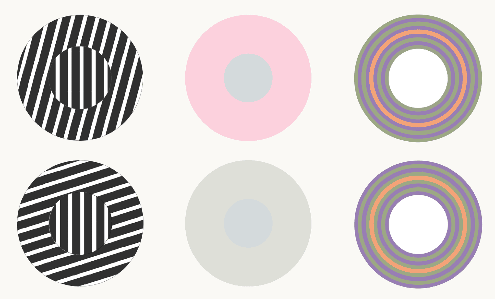
Contextual illusions. Left column, tilt illusion: a central disc of vertical black and white stripes inside a ring of stripes tilted slightly from vertical in the top row and close to horizontal in the bottom row. Middle column, color induction: an identical gray center on a pink ring in the top row and on a gray ring in the bottom row. Right column, ring induction: concentric rings of green, purple and orange around a white center, in two versions
Open full-size figure
The two centers in each column are physically identical
- Human perception. Tilt illusion: a tilted surround shifts the perceived orientation of the center
- Color induction: the same gray center looks different on a pink and on a gray surround
- Model: the same circuit, one set of parameters, reproduces these shifts in orientation, color, motion and depth
- If illusions are side effects of linking fragments into objects, tasks that require grouping should need this circuit
Slide 4
Pathfinder: curve tracing for networks
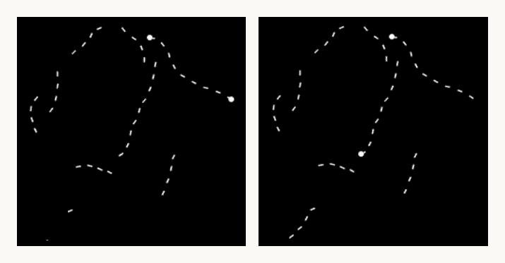
Reproduced from Linsley et al. 2018, Fig. 1b: two Pathfinder images, white dashed curves on black, each with two white dots. In the left image one long dashed path joins the two dots; in the right image the dots sit on different paths
Open full-size figure
- Prediction from the illusions: a grouping task should need this circuit
- Pathfinder: are the two dots joined by one dashed path? People answer quickly and accurately
- Each unit sees only a small patch of the image (its receptive field), while the path can wander anywhere
- hGRU (horizontal gated recurrent unit, our lab): the same circuit with learned weights and gates; horizontal connections pass activity from dash to dash
Slide 5
Recurrence vs. depth on Pathfinder

Reproduced from Linsley et al. 2018, Fig. 3c: accuracy on the longest Pathfinder paths, 0.5 to 1, against the number of free parameters relative to the hGRU, log axis 1 to 1000. The hGRU reaches 0.99 at 1 times. Feedforward networks with 1, 3 or 5 layers stay between 0.5 and 0.93 at 1.4 to 9.5 times. Only large networks such as FCN, U-Net, SegNet and ResNet-152 reach 0.98 to 0.99, at about 230 to 900 times the parameters; ResNet-50 and ResNet-18 stay near chance
Open full-size figure- hGRU model: a recurrent circuit with GRU-like gates; is a convolution (each unit connected to its neighbors in space).
- Feedforward CNNs match it only with 200 to 900 times more parameters; ResNet-18 and ResNet-50 stay at chance
- Activity propagates from dash to dash, one step at a time
Slide 6
Follow-up: transformers fail on long Pathfinder
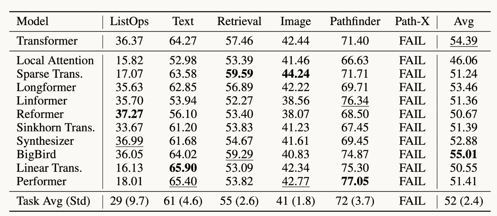
Reproduced from Tay et al. 2021, Long Range Arena results table: eleven transformer variants on six tasks. On Pathfinder they score 66 to 77 percent; on Path-X, the long version of Pathfinder, every one is marked FAIL
Open full-size figure
- Long Range Arena (Google, 2021): every transformer variant fails Path-X, the long Pathfinder
- Later state-space models (S4) and task-pretrained transformers do better: benchmark claims need a date
Slide 7
Grouping time follows human reaction times
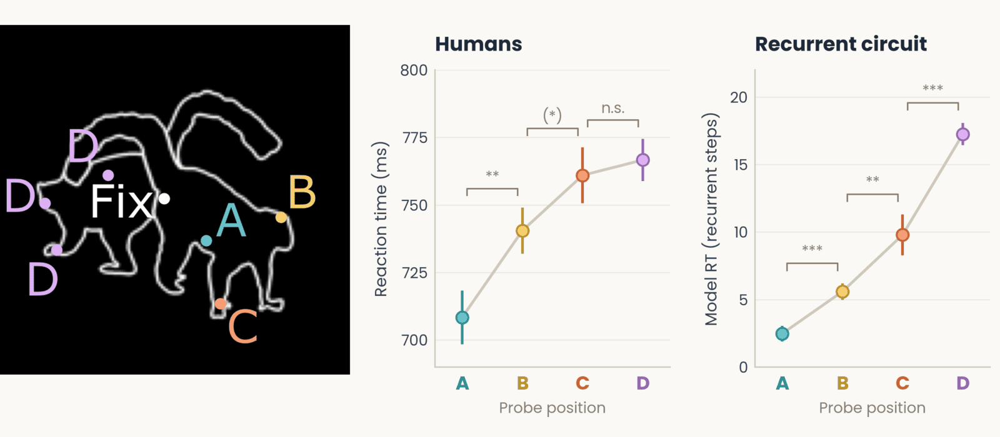
Left: a black and white outline of two animals, one fixation dot labeled Fix, and probe dots A, B and C on the fixated animal at increasing distance along its body, and three probe dots D on the other animal. Middle, humans: reaction time in milliseconds rises from about 708 at A to 741 at B, 761 at C and 767 at D. Right, recurrent circuit: model reaction time in recurrent steps rises in the same order, from about 2.5 at A to 5.5 at B, 10 at C and 17 at D
Open full-size figure
- Human behavior: reaction time rises from A to C, longest on the other object (D)
- Model: the hGRU (horizontal connections only), trained to group, never fit to these data: more steps in the same order
Slide 8
Grouping spreads along a curve in V1
![Reproduced from Pooresmaeili and Roelfsema 2014, Fig. 4A, two panels. Above each, two small displays with the same curves and the same receptive field (a square) far along a curve: in one display that curve is connected to the fixation point (attention in RF, red), in the other it is not (attention outside RF, blue). Below, the average V1 response over time (N = 34 recording sites): both traces share the first peak, then the red trace stays higher. The difference starts at 164 ms when the distractor is far (large gap, left) and at 240 ms when it passes close (small gap, right)](../images/L18/pub_pooresmaeili2014_fig4a_gap.png)
Reproduced from Pooresmaeili and Roelfsema 2014, Fig. 4A, two panels. Above each, two small displays with the same curves and the same receptive field (a square) far along a curve: in one display that curve is connected to the fixation point (attention in RF, red), in the other it is not (attention outside RF, blue). Below, the average V1 response over time (N = 34 recording sites): both traces share the first peak, then the red trace stays higher. The difference starts at 164 ms when the distractor is far (large gap, left) and at 240 ms when it passes close (small gap, right)
Open full-size figure- Monkey V1 (primary visual cortex), single neurons: the monkey looks to the end of the curve that starts at fixation; the receptive field (square) sees the same curve either way
- On the target curve (red) neurons fire more than on the distractor (blue): an enhancement, after the first response
- Far along the curve it starts at 164 ms; when the distractor passes close, at 240 ms
- It spreads ~50 ms per step, more slowly where the distractor is close
Slide 9
Horizontal vs. top-down connections
![Reproduced from Kim et al. 2020, Figs. 4a and 5a. Top, Pathfinder: example images with a yes and a no answer, and accuracy for four circuits against human accuracy near 96 percent. Horizontal plus top-down and horizontal only reach about 96 percent, top-down only about 63 percent, no recurrence 50 percent. Bottom, cABC, where the two marked points are on the same letter or not: horizontal plus top-down about 88 percent, top-down only about 87 percent, horizontal only about 54 percent, no recurrence 50 percent, human accuracy about 84 percent](../images/L18/kim2020_tasks_bars.svg)
Reproduced from Kim et al. 2020, Figs. 4a and 5a. Top, Pathfinder: example images with a yes and a no answer, and accuracy for four circuits against human accuracy near 96 percent. Horizontal plus top-down and horizontal only reach about 96 percent, top-down only about 63 percent, no recurrence 50 percent. Bottom, cABC, where the two marked points are on the same letter or not: horizontal plus top-down about 88 percent, top-down only about 87 percent, horizontal only about 54 percent, no recurrence 50 percent, human accuracy about 84 percent
Open full-size figure- Models (human accuracy as reference). cABC (cluttered ABC): are the two marked points on the same letter? The letters overlap, so local continuation of a line is no longer enough
- Horizontal alone: Pathfinder, not cABC; top-down alone: the reverse → line continuation needs horizontal links, letter shape needs top-down links
- Both together reach human accuracy on both tasks; without recurrence, accuracy stays at chance
Slide 10
Grouping fills in an object over steps

Animation, photograph of a baby at a laptop: colored object masks start in a few places and spread over the recurrent steps until each object is filled
Open full-size figure
Animation, photograph of soccer players on a field: colored object masks start in a few places and spread over the recurrent steps until each object is filled
Open full-size figure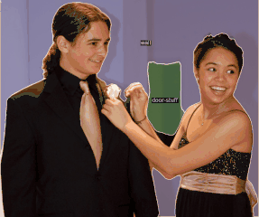
Animation, photograph of two dancers: colored object masks start in a few places and spread over the recurrent steps until each object is filled
Open full-size figure

Animation, photograph of two dogs: colored object masks start in a few places and spread over the recurrent steps until each object is filled
Open full-size figure- At image scale: a horizontal recurrent circuit added to a feedforward network improves panoptic segmentation (label every pixel by category and separate individual objects), with fewer parameters
- Activity starts in a few places and spreads until each object is filled; the spreading is learned from the task
Slide 11
Why transformers replaced RNNs
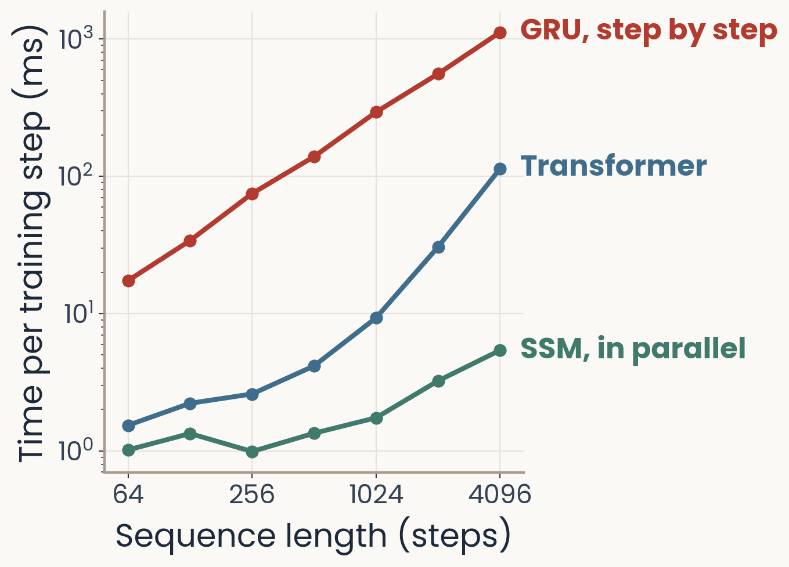
Time per training step in milliseconds, log scale, against sequence length from 64 to 4,096 steps, measured on a laptop GPU. GRU stepped one step at a time (red) rises from about 20 ms to about 1,100 ms. One transformer layer (blue) rises from about 2 ms to about 100 ms. A state-space model, a linear recurrence computed in parallel (green), stays between about 1 and 6 ms
Open full-size figure
- Grouping circuits are recurrent. Why did transformers win?
- Slow to train: an RNN computes step after step ; a transformer computes all positions at once
- Long memories are hard: gradients vanish over many steps
- The fix: a state-space model (SSM), a linear recurrence computed for all steps at once (green); our sCSSM is one (next)
Slide 12
Our recurrent model on Pathfinder
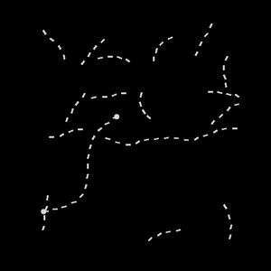
A Pathfinder image, path length 14: white dashed curves on black; two white dots joined by one long dashed path
Open full-size figure

Two scatter plots of Pathfinder accuracy, 50 to 90 percent, with human accuracy marked at about 89 percent. Left, against training step time in milliseconds, log scale; right, against number of parameters, log scale. The sCSSM models (blue) form an upper front reaching about 91 percent, at or above human accuracy; Mamba-2 reaches about 84 percent; transformers stay near 50 to 55 percent, close to chance, as do sCSSM versions without the recurrence over steps or without spatial kernels
Open full-size figure- Task: are the two dots joined by one dashed path? (longest paths, 14 dashes)
- Models: our lab's sCSSM, a recurrent layer that trains in parallel, with a 2-D state laid over the image, reaches human accuracy; transformers stay near chance
Slide 13
PathTracker: Pathfinder in time
Animation of the PathTracker task: a dot moves among identical distractor dots on a black background, from a red start marker; the question is whether it ends on the blue goal marker
Open full-size figure
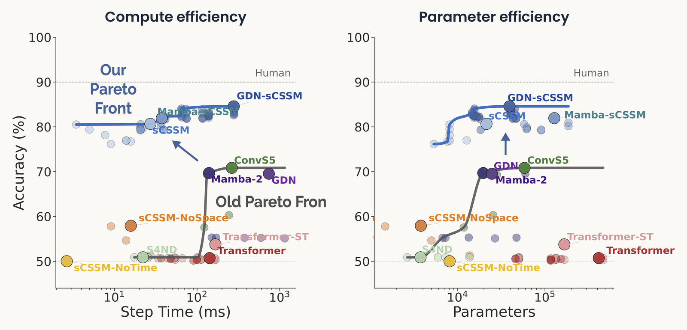
Two scatter plots of PathTracker accuracy, 50 to 100 percent, with human accuracy marked at 90 percent. Left, against training step time in milliseconds, log scale; right, against number of parameters, log scale. The sCSSM models form an upper front near 80 to 85 percent; Mamba-2, Gated DeltaNet and ConvS5 reach about 70 percent; transformers and S4ND stay near 50 percent, as do sCSSM versions without the temporal recurrence or without spatial kernels
Open full-size figure
- Task: does the moving dot end on the blue marker? Needs a state carried over time
- Models: our sCSSM is more accurate than Mamba; transformers stay at chance
Slide 14
From learning representations to manipulating them
| So far: learning representations | Today: manipulating them | |
|---|---|---|
| Question | What is there? | What happens next? What would it look like from there? |
| Examples | Features, geometry; grouping by recurrence over space | Run a fall forward (Planko); move to another viewpoint (perspective taking) |
| How | Trained networks, read out | Simulation: steps over an internal model, a world model |
Networks learn representations well. Can they manipulate them?
Slide 15
From grouping to simulation
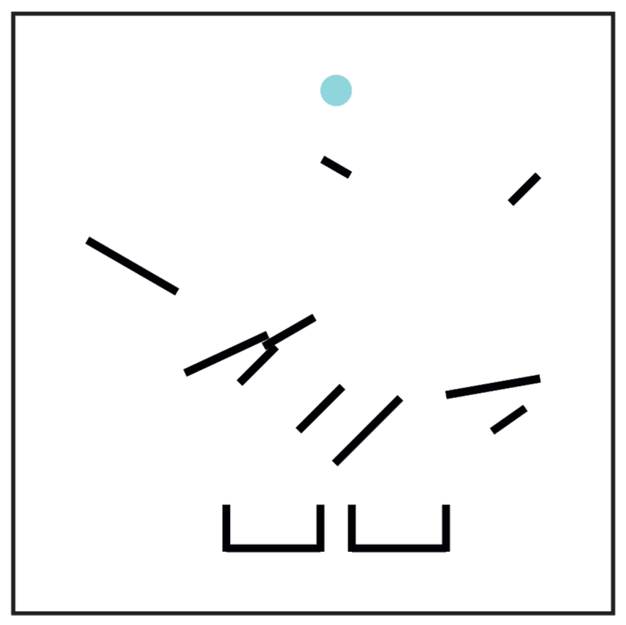
A Planko board: a light blue ball at the top, ten black planks placed at random, and two catcher baskets at the bottom
Open full-size figure
Grouping took steps. So does predicting a fall. Drop the ball. Which basket does it land in?
Slide 16
Planko: which basket will the ball land in?
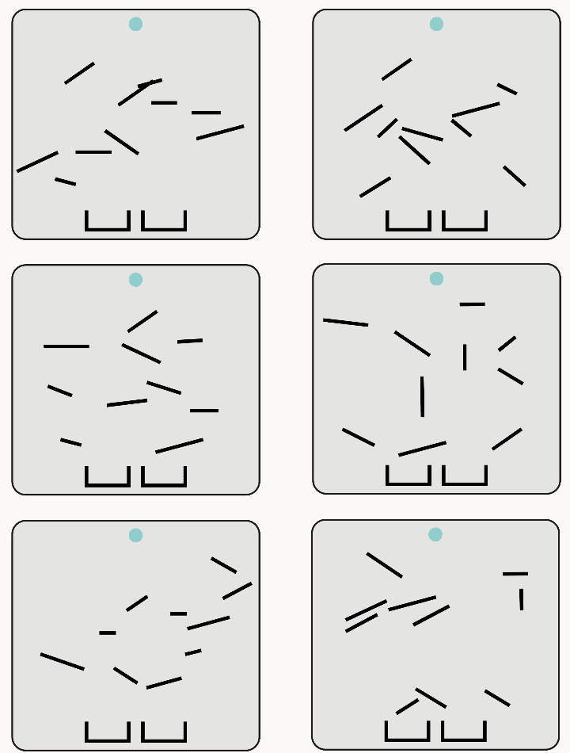
Reproduced from Ahuja et al. 2024, Fig. 1A: six example Planko boards, each a gray square with a light blue ball at the top, randomly placed black planks, and two catcher baskets at the bottom
Open full-size figure
- Task (humans, monkeys, models): a ball is dropped from the top, bounces off the planks and lands in the left or the right catcher
- Report the catcher before the ball falls; the board changes every trial, so no template works
- Boards range from one plank to ten: more planks, longer simulation
- Monkeys learn the task gradually, and shift to a simulation-based strategy as the boards get harder
Slide 17
Brains simulate: monkey fMRI
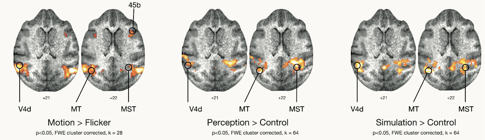
Reproduced from Ahuja et al. 2024: three pairs of axial fMRI slices with the motion-sensitive areas MT, MST and V4d circled. Left, a standard motion localizer, motion versus flicker. Middle, watching the ball fall versus a control. Right, mentally simulating the fall, with the ball hidden, versus a control. The same motion-sensitive areas are active in all three
Open full-size figure
- Where does the brain run the fall? Monkey fMRI during Planko: predicting the landing (right) recruits motion-sensitive areas (MT, MST, V4d), as watching the fall does (middle)
- Human fMRI: a "physics engine" network that overlaps areas for action planning (Fischer et al. 2016)
Slide 18
Model: what the recurrent network does
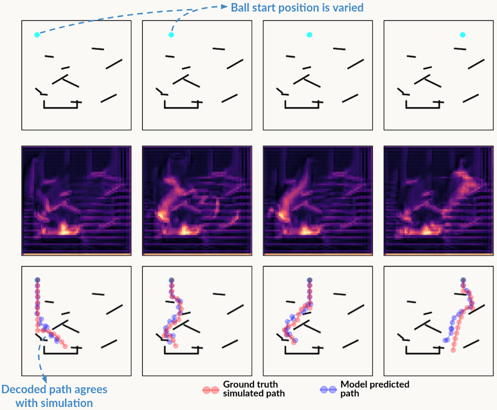
Reproduced from Ashok et al. 2022: four Planko boards with the ball's start position varied from left to right (top row), the recurrent network's hidden-state maps (middle row, bright where the network is active), and the ball path decoded from that state (blue dots) lying on the true simulated path (red dots) (bottom row)
Open full-size figure
- What does a network need to run it? Model: a recurrent network trained on Planko (the same boards as the monkeys)
- Its state changes with the ball's start position, step by step
- Decode the ball's position from the state at each step: the decoded path (blue) lies on the simulated path (red)
- Nobody told the network to track the ball
Slide 19
Recurrence learns simulation; feedforward does not
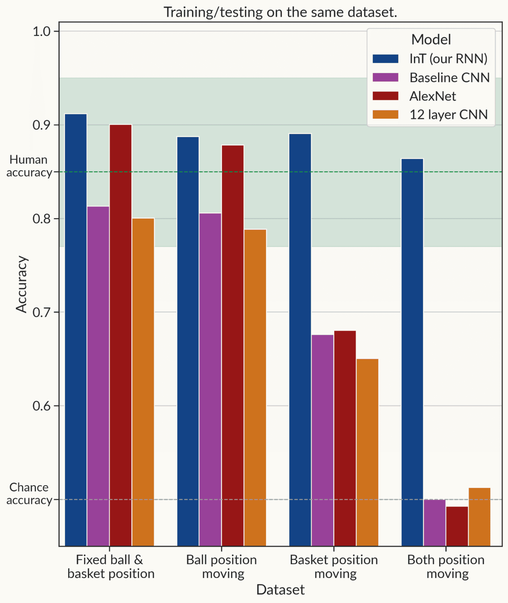
Accuracy bars on four Planko datasets: the recurrent model (blue) stays near human accuracy on all four, while a baseline CNN, AlexNet and a 12-layer CNN fall toward chance when both ball and basket positions move
Open full-size figure
- Models: a recurrent network and matched feedforward CNNs, trained on four Planko datasets, from fixed ball and basket to both positions moving
- The RNN (blue) stays near human accuracy on all four
- The feedforward CNNs fall to chance once both positions move
- Same pattern as Pathfinder: feedforward fails once the answer needs steps
- Project question: does a video-prediction network's state contain the ball's path?
Slide 21
Settling time predicts reaction times
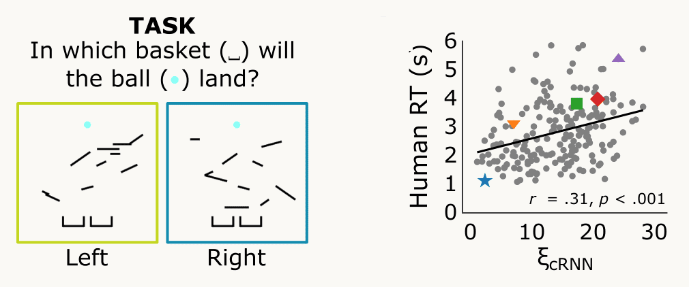
Reproduced from Goetschalckx et al. 2023, Fig. 4, the Planko task: two example boards, a ball at the top, planks, and two baskets; in which basket will the ball land, left or right? Next to it, a scatter: each dot is one board, human reaction time in seconds (0 to 6) against the model's settling time (0 to 30), with a rising line, r = .31
Open full-size figure
- Task: in which basket will the ball land?
- Model: a recurrent network trained on the task. Settling time: how long its answer stays unsure
- Human behavior: boards with a longer settling time take people longer → r = .31
Slide 22
Perspective taking: seeing through someone else's eyes
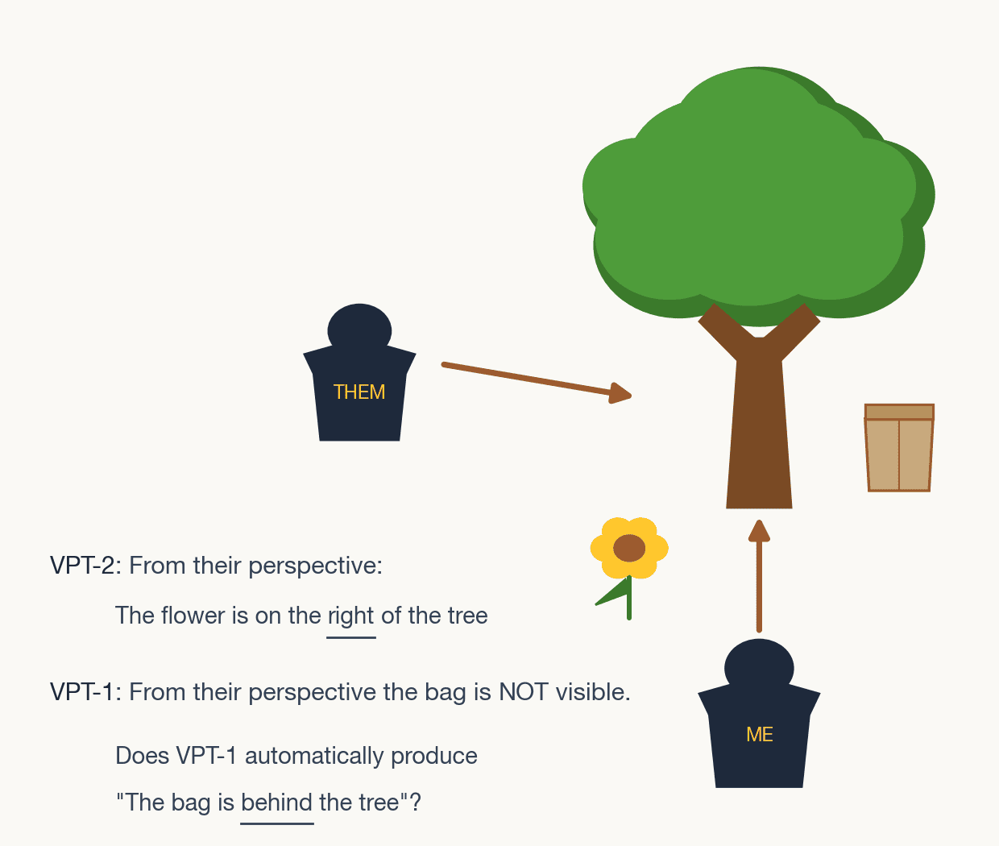
Schematic: a tree, a flower in front of it and a bag behind it, seen by two people, ME in front and THEM to the side. Level 1 visual perspective taking: from their perspective the bag is not visible. Level 2: from their perspective the flower is on the right of the tree
Open full-size figure
- Knowing what another person can see is a first step of theory of mind: reasoning about other minds
- Level 1: can they see it? Level 2: how does it look to them? Children master Level 1 first
- Vision-language models pass theory-of-mind and mental-rotation tests separately, and fail when a task needs both
- Our test asks the Level 1 question with real scenes
Slide 23
The 3D Perception Challenge
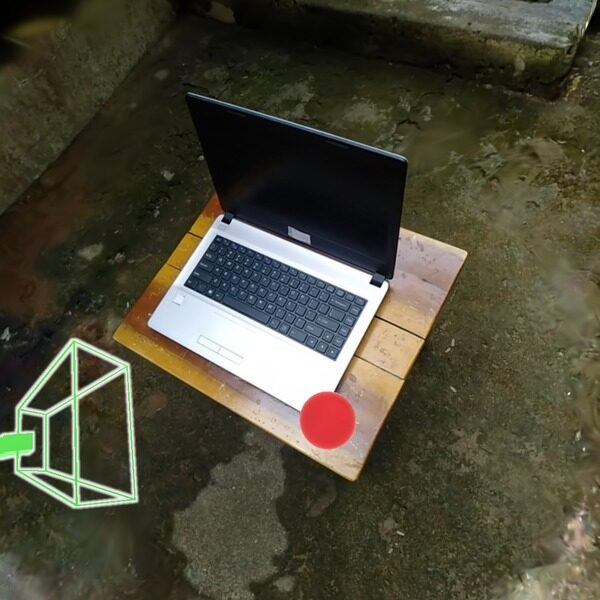
A laptop open on a small wooden table on wet concrete, seen from above. A green camera icon sits at the lower left and a red ball at the lower right of the table
Open full-size figure
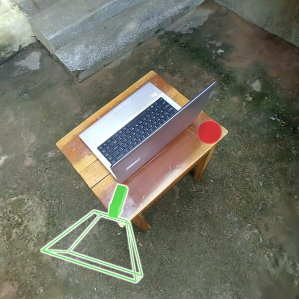
The same laptop and table from another viewpoint. The green camera is now in front of the table and the red ball is behind the laptop
Open full-size figure
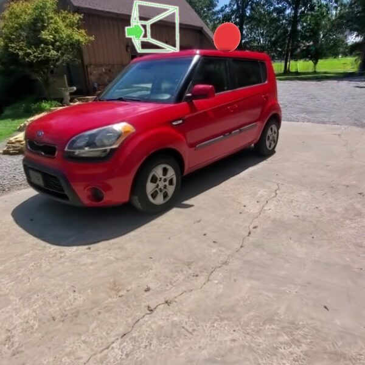
A red car on a driveway, with a green camera icon at the top and a red ball just above the car
Open full-size figure
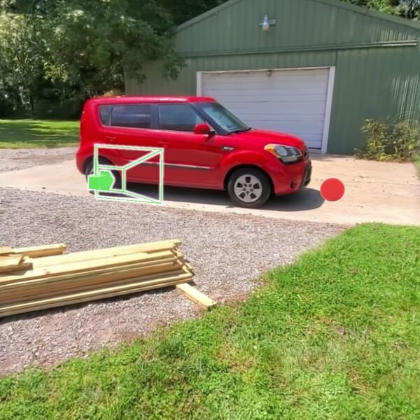
The same red car from the side. The green camera icon is at the car's front wheel and the red ball is behind it on the right
Open full-size figure
- Depth order: is the green camera closer to us than the red ball?
- Visual perspective taking (VPT): can the green camera see the red ball?
- Same object, two viewpoints: the answers flip
Slide 24
Models match people on depth, fail on perspective
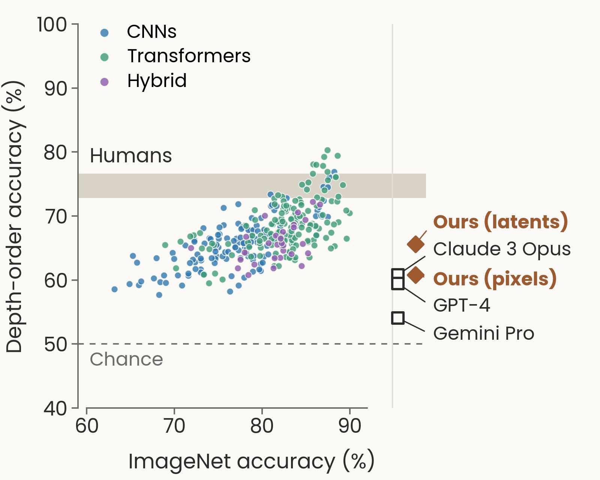
Depth-order accuracy against ImageNet accuracy for 318 vision models, three vision-language models and the lab's autoregressive models; the best networks reach the human band near 75 percent
Open full-size figure
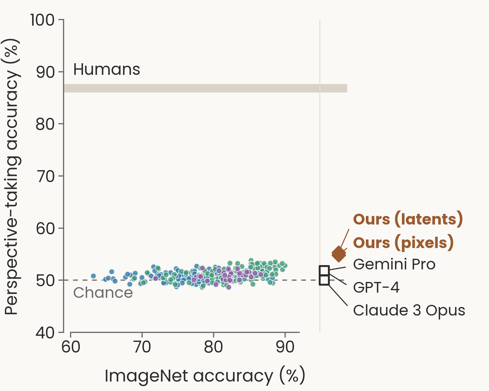
Perspective-taking accuracy against ImageNet accuracy: every vision model, vision-language model and the lab's autoregressive models sit near the 50 percent chance line, far below the human band near 87 percent
Open full-size figure
- Models: 300+ networks (a linear probe on each), three vision-language models; people: 75% depth, 87% perspective
- Depth order: the best networks reach the people. Perspective taking: every model sits near chance
- A reasoning gap: models read depth but cannot take another viewpoint
Slide 25
A frontier model still misses perspective taking
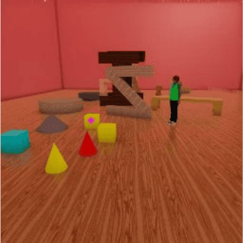
Camera view of a simulated room: a human avatar stands among cubes and cones
Open full-size figure
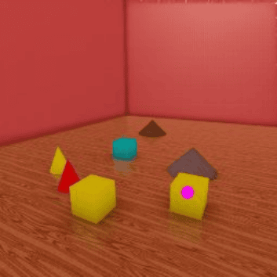
The same scene rendered from the avatar's viewpoint: cubes and cones seen from the human's position
Open full-size figure
- Model: a frontier vision-language model (GPT-6 Astra), 800 scenes from the lab's simulator
- Task: which side is the object on, left or right, front or behind, from the human's view or the camera's view
- From the human's own view it is near perfect (98%); from the camera view 78%
- The drop is all left versus right (60%), the judgment that flips with viewpoint; front versus behind stays at 96%
Slide 26
People mentally move to the other viewpoint
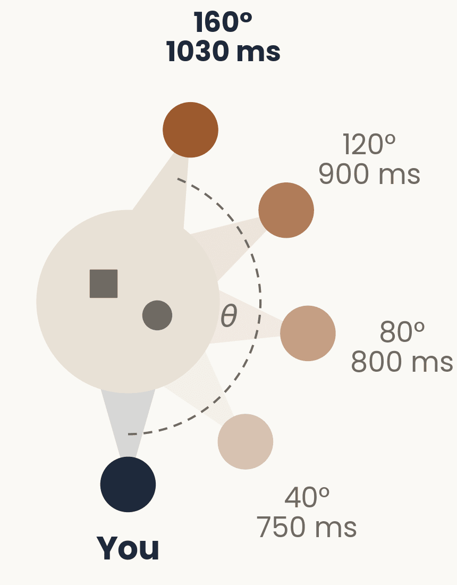
Top-down sketch: you at the bottom, and another person seated at 40, 80, 120 and 160 degrees around a table; reaction times rise from 750 to 1030 milliseconds
Open full-size figure
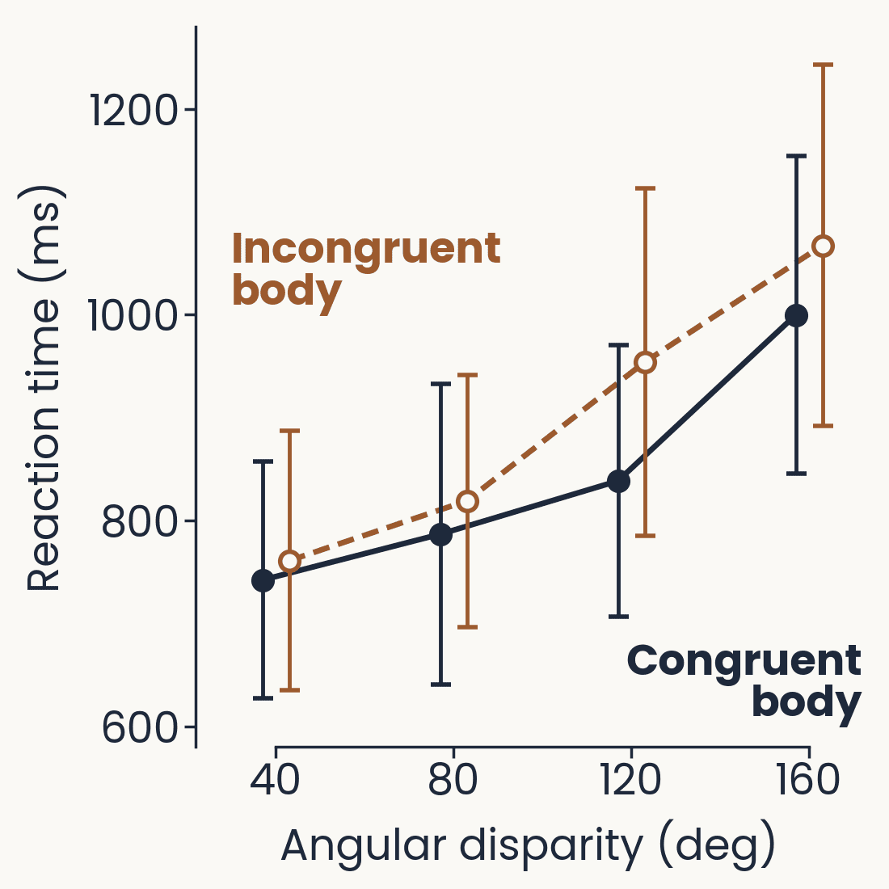
Reaction time in milliseconds against angular disparity from 40 to 160 degrees: rising from about 750 to 1000, faster when the body orientation is congruent with the rotation than when it is incongruent
Open full-size figure
- Human behavior: judge left or right from another person's seat at a table; reaction time grows with the angle to that person
- A congruent body posture speeds the judgment
- An embodied transformation: people act as if they emulate the movement that would take them there
Slide 27
What Planko and perspective taking show
- Networks learn representations of depth, objects, the board
- They fail when the task needs to manipulate them: run the ball forward, turn the scene to another viewpoint
- Brains, and our recurrent models, do it by simulation: steps run over an internal model
- A model of the world you can run forward and act on is a world model
Slide 28
Perspective taking needs a world model
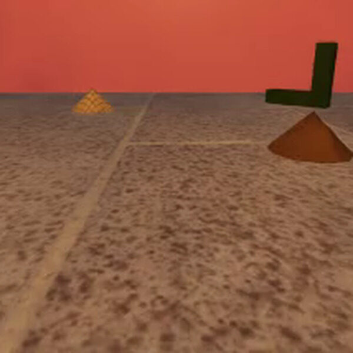
An agent's view at the start: a cone on a gray floor in front of a salmon wall
Open full-size figure
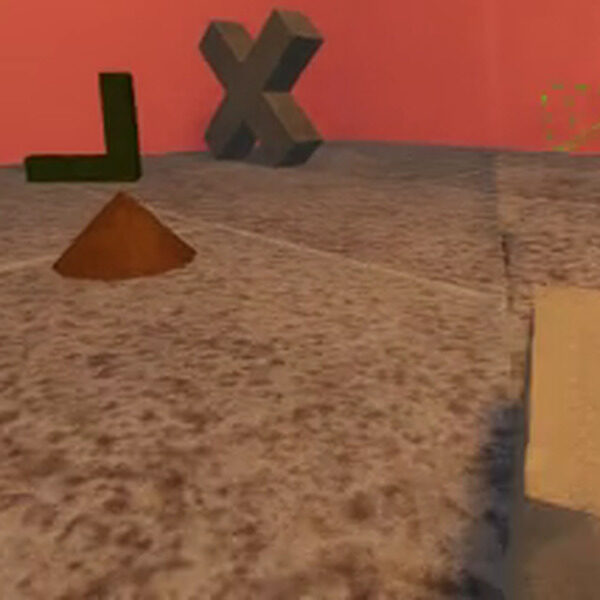
The agent's view after turning: a cone and a dark X-shaped block against the wall
Open full-size figure
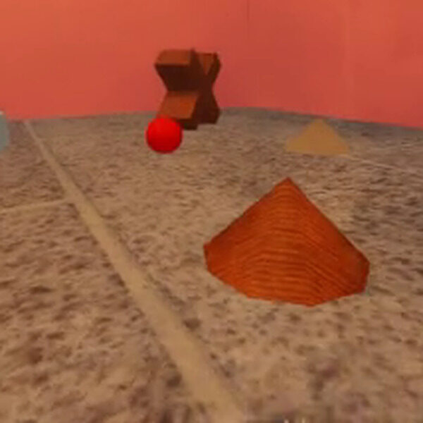
The agent's view after moving on: a larger cone in front, a red ball and the X-shaped block behind
Open full-size figure
- Models have 3D representations but cannot manipulate them; people simulate moving there
- A world model predicts the next view from the view and an action; chained, it can simulate moving to another viewpoint
Slide 29
What is a world model?
- A driver imagines a turn: the state is what I see and remember, the action is turning the wheel, the next state is what I will see
- is the transition map, a whole network; is a latent (a compressed internal summary of the scene, not the raw pixels), the recurrent state of the last lecture
- Planning = a rollout: run forward several steps without acting, then pick the action whose imagined outcome is best
- Same predictive objective as self-supervised learning, with an action as an extra input
- JEPA: predict the next latent instead of the next frame's pixels
Slide 30
Video world models
- Generated video can look like film, and some models let you act inside the world they generate
- Realistic pixels do not guarantee correct physics
Slide 31
Robot planning with a world model
- V-JEPA 2 (Meta 2025): a world model learned from internet video, then a little robot video
- Given a goal image, the robot imagines the outcome of candidate actions and picks the best one: plan by running the model forward
- Pick-and-place in labs it was never trained in
Slide 32
Embodiment: learning by moving
- Active vision: an agent learns by moving and seeing what changes
- It chooses its actions and sees their consequences, so it can learn an action-conditioned model of the world, then use it to simulate another viewpoint
- Driven by intrinsic rewards (curiosity, learning progress, surprise), without labels
- With developmental psychologists: which rewards drive infants' exploration, and does the same reward produce the same learning in the agent?
Slide 33
What to keep
| Theme | Summary | Open question |
|---|---|---|
| 1 Describing | representations are points in a space; comparing them is a choice | which geometry matters? |
| 2 Learning | stacked, trained units; CNNs untangle like the ventral stream | same geometry, same computation? |
| 3 Sequences & state | attention, LLMs, recurrence; a world model predicts the next state | can video teach a model to run the world forward? |
| Today | learning a representation is not enough: simulation needs to manipulate it | can a world model learned by acting close the gap? |
Slide 34
What happens next: exam and final project
- Tue 12/1: Exam 2, in class, Lectures 9–19; study guide on Ed
- Thu 12/3: project work sessions begin; from then on, class meetings are work sessions
- Sun 12/6, 11:59 PM: proposal due, one page per team (moved from Wed 12/2); feedback at the Tue 12/8 session
- Mon 12/21, 9:00 AM: poster session (open to the public) and the two-page CCN-format report
- AI is allowed on the project, with disclosure: one agent writes, a separate one critiques, as taught in the project-clinic recitation; run smoke tests before spending compute
Slide 35
Starting points for a project
- Data ready to use: the THINGS 100 bundle (human fMRI of IT, monkey V1/V4/IT recordings, odd-one-out similarity judgments, ResNet-18 features; download the images yourself from OSF, project jum2f) · Michael Lee's collection of about 50 classic similarity data sets
- Benchmarks from our lab: the 3D-PC stimuli and code, the Planko boards, the ClickMe maps and harmonization code
- AI for neuroscience: predictive models of neural data
- World models: does the state of a network trained to predict video contain the ball's path? Released tests: IntPhys 2, Physics-IQ
- Benchmarking AI against people: run a psychology test on a model, with the human baseline in the same study
Slide 36
Further reading
Optional: for going deeper, or as a starting point for the final project.
- Hafner, Yan & Lillicrap arXiv 2025: Dreamer 4, an agent trained entirely inside a learned world model
- Motamed et al. WACV 2026: do generative video models understand physical principles?
- Bordes et al. arXiv 2025: IntPhys 2, violation-of-expectation tests for video models
- Garrido et al. arXiv 2025: intuitive physics emerges from self-supervised video pretraining
- Vafa, Chang, Rambachan & Mullainathan ICML 2025: a model that predicts orbits without learning Newton's law
- Jensen, Hennequin & Mattar Nat Neurosci 2024: a recurrent network that plans by imagined rollouts, which resemble hippocampal replay
- Mineault, Griffiths & Escola arXiv 2026: cognitive abilities that benchmarks do not measure
- Linsley, Feng & Serre Trends Cogn Sci 2025: better AI does not mean better models of biology
Slide 37
Minute paper
Submit on Canvas → Minute papers → Minute Paper 20 (access code read out in class).
Write three brief points in your own words:
- The same horizontal circuit that groups a curve also produces illusions. Are illusions a bug or a feature
of a visual system, and what would a network that never shows them be missing? - Something you do not yet understand, or a question still open
- Another idea you found interesting, and why it matters for brains, behavior or AI
Credit for a thoughtful attempt, not for being correct.